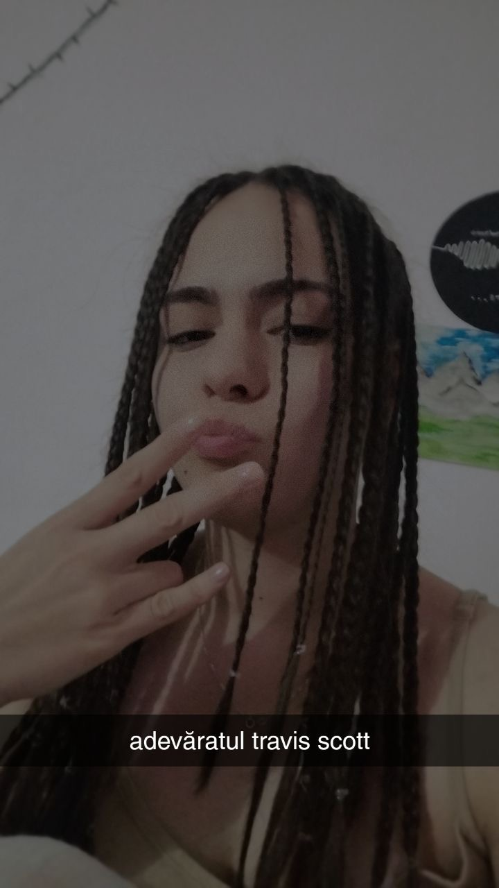

4 februarie 2024
DM
💜 Te iubesc pentru ca sunt prima persoana pentru tine 💜
Oamenii sunt interesanți. Ne face o deosebită plăcere sa împărtășim si celorlalți ceea ce am făcut sau ceea ce am realizat. Cumva este normal, vrem sa fim auziți.
Unii poate sunt enervați de chestia asta. Unii nu sunt mulțumiți sa audă realizările altora. Insa eu, Ioana, ador sa te ascult. Mereu m-am simțit important,
pentru ca am fost poate prima persoana care aude acea poveste. Așa ca te rog sa nu te oprești. Mereu când simți ca vrei sa împărtășești ceva, scrie-mi sau
sună-ma. Mereu a fost și va fi important ceea ce vrei sa îmi spui în acel moment. Chiar daca uneori nu simți acea atenție, pentru mine va conta mereu.